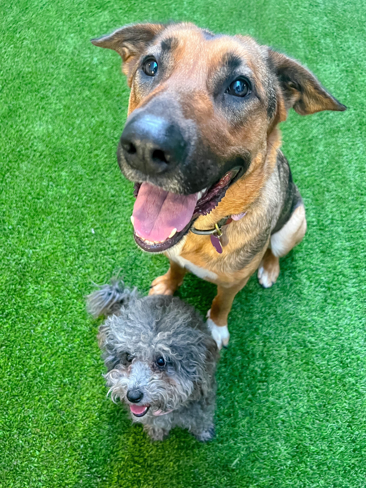
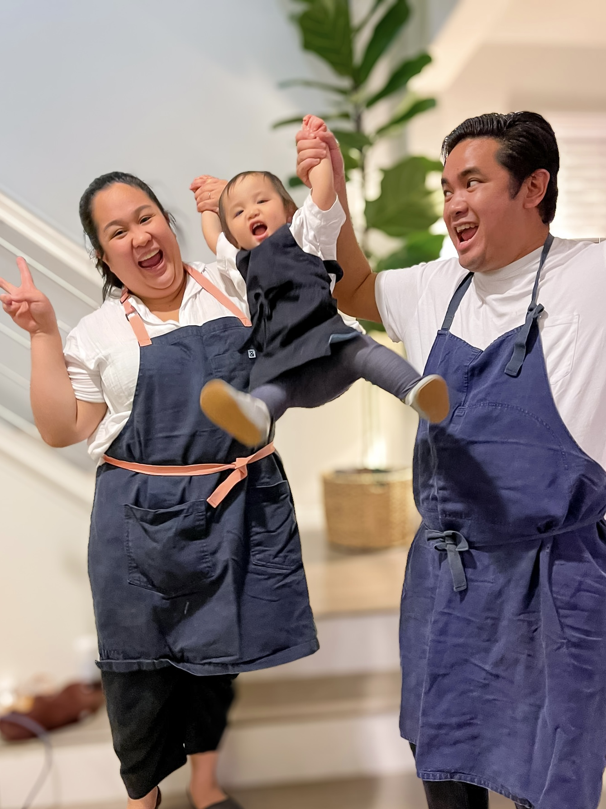

About
Sara Papa



I'm a Director of Product Design, but I didn't start in design. I started in customer success at early-stage tech startups, where I got hooked on dogfooding sessions and sitting with customers while they used the product. That's what made me fall in love with the craft.
At Martti (formerly UpHealth) I was the only designer on the team, touching everything: building out the design system, shaping the roadmap, shipping work for healthcare providers on the frontlines. I deepened my skills as a Product Designer II at RubiconMD (later acquired by CVS Health), then made a deliberate jump to Restaurant365 to tackle a new vertical and solve problems for the restaurant industry. That role eventually grew into leading the design function.
I thrive on cross-functional, ambiguous problems. At the end of the day, I'm in this because good design makes life easier for real people.
Causes I care about
Healthcare equity · Women's empowerment · Animal welfare · Independent restaurants
Outside of work
Always traveling · Chasing the next great meal · Singing everywhere · Surviving a group fitness class